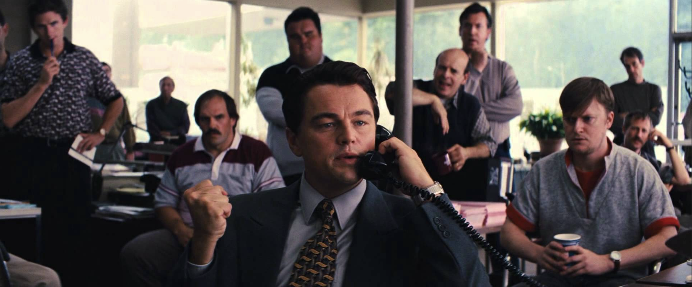
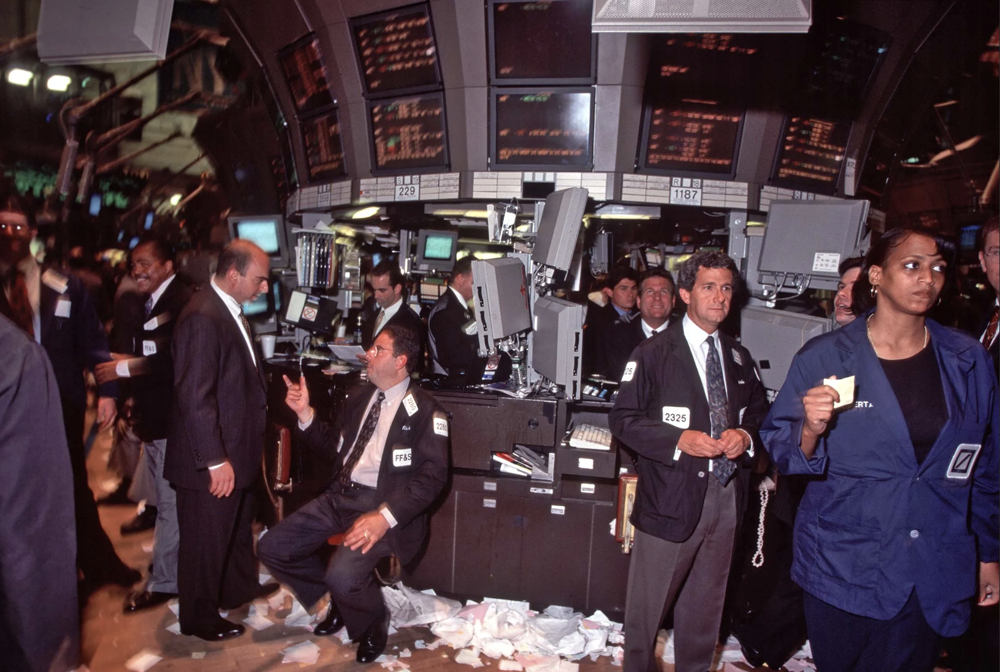

imagine a market where thousands of smart traders are constantly scanning for mispricing. The moment something looks cheap or expensive, they act on it, and their actions immediately correct the price. So opportunities disappear almost as soon as they appear.
The Efficient Markets Hypothesis (EMH) is a useful benchmark, but not a description of reality. Efficiency is not a property of markets. It is something that has to be maintained. And that maintenance has a cost.
The Setup
Picture a market filled with well-capitalized, highly skilled traders. They scan continuously for mispricing. The moment something looks off, they act. Their trades push prices back toward fair value. Opportunities disappear almost as quickly as they emerge.
This is the world EMH describes.
In its strongest form, EMH states that prices fully reflect all available information. No investor can systematically earn abnormal risk-adjusted returns. Any deviation is immediately arbitraged away.
The opening scene of The Wolf of Wall Street shows the opposite world. A broker sells a worthless OTC stock as a revolutionary tech company. There is no reliable information, no verification, and no discipline. Price reflects persuasion, not fundamentals.

EMH assumes the opposite: transparency, competition, and rapid correction. It is not a description of markets. It is a benchmark for thinking about them.
The Paradox at the Core
EMH relies on strong assumptions. Information is freely available. Processing it is costless. Arbitrage capital is unlimited. Under these conditions, prices follow a martingale. Changes are unpredictable given what is already known.
But this equilibrium contains a contradiction.
Information is not free. It requires analysts, data, models, and time. If prices already reflect all of that, there is no incentive to produce it. If nobody produces it, prices cannot reflect it.
Sanford J. Grossman and Joseph Stiglitz formalized this point. Perfect efficiency is internally inconsistent. Some degree of mispricing must exist to reward those who do the work of producing information. Without that reward, the entire process that makes prices informative collapses.
This changes the interpretation entirely. Mispricing reflects the cost of keeping the system running.
Where Biases Accumulate
Even when information is available, it is imperfectly processed.
Investors are overconfident. They overweight recent outcomes. They follow others when uncertainty rises. These are not isolated mistakes. They are systematic.
Werner De Bondt and Richard Thaler showed that extreme losers tend to outperform past winners over subsequent periods. Prices overshoot and then reverse. The deviation comes not from missing information, but from misinterpreting it.
There is a complication. Every test of market efficiency is simultaneously a test of the model used to define abnormal returns. What looks like mispricing may simply be compensation for risk that the model fails to capture. This is the joint hypothesis problem. Data alone cannot resolve it.
But the pattern is clear. Markets do not just process information--they distort it.
The Corrective Mechanism
Modern markets contain institutional machinery designed to reduce mispricing.
Hedge funds, prop desks, and quant firms search for discrepancies. When they find them, they deploy capital. In liquid markets, this works quickly. Spreads tighten, prices converge.
But this process depends on funding.
Andrei Shleifer and Robert Vishny showed that arbitrage is constrained by capital. It relies on external investors, risk limits, and balance sheet capacity. When those constraints bind, corrective forces weaken.
This is the key point. The corrective mechanism is not unconditional.
It works when funding is abundant and degrades when funding tightens.
When Maintenance Fails
Under stress, the system breaks in a predictable sequence.
Funding deteriorates. Trading costs rise. Arbitrage capital retreats. Positions are unwound because they can no longer be held, regardless of whether they are right.
Diversification stops working, correlations rise, and assets that normally offset each other begin to move together. Selling becomes indiscriminate.

The collapse of Long-Term Capital Management (LTCM) illustrates this clearly. Its trades were convergence positions across closely related securities, grounded in sound relative value logic. When Russia defaulted in 1998, cross-asset correlations surged. Losses accumulated across the entire portfolio simultaneously. Margin calls followed that LTCM could not meet. Positions were liquidated at distressed prices.
The trades broke down at the level of funding, not logic.
The Structural View
Markets are not efficient or inefficient. They are maintained at varying levels of efficiency.
In calm conditions, liquidity is deep and funding is stable. Mispricing is small and short-lived. Efficiency appears real.
In stressed conditions, liquidity withdraws and funding tightens. The cost of maintaining efficiency rises. At some point, it becomes too high. Mispricing widens. Correction slows or stops entirely.
Efficiency does not disappear randomly. It deteriorates when the system that sustains it weakens.
This leads to a different framing.
Efficiency is not a property of prices. It is an outcome produced by capital, incentives, and institutions. And like any maintained system, it breaks when the inputs are withdrawn.
Conclusion
The question is not whether markets are efficient.
The real question is what keeps them efficient, how much it costs, and when that cost becomes unsustainable.
Prices can look stable even when the structure underneath is fragile.
Efficiency, in other words, is not a given. It is something the market pays for.
And sometimes, it stops paying.